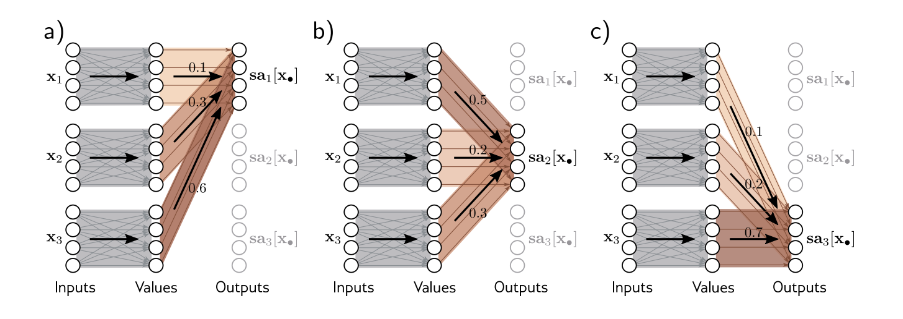
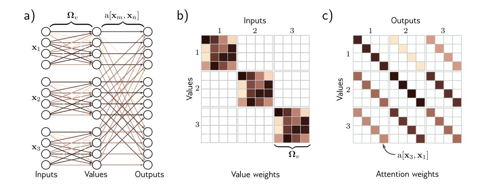
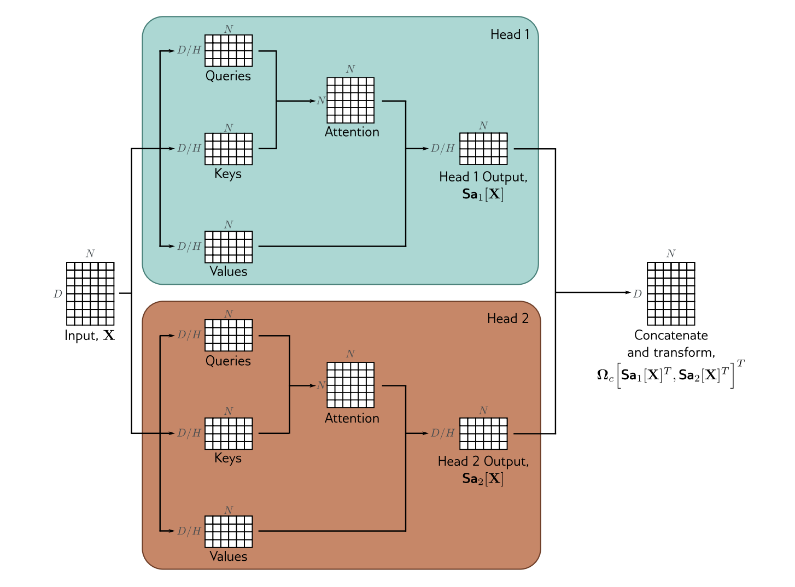
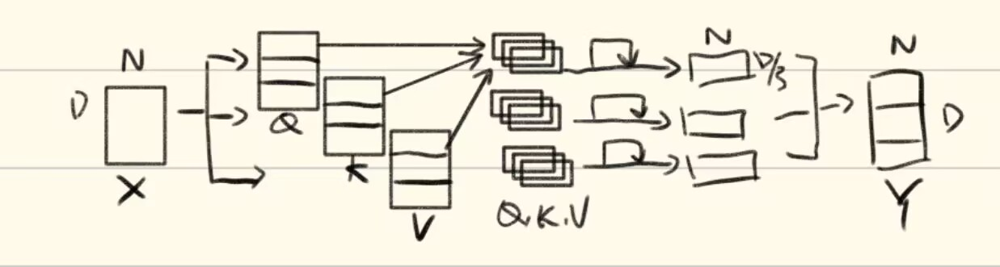
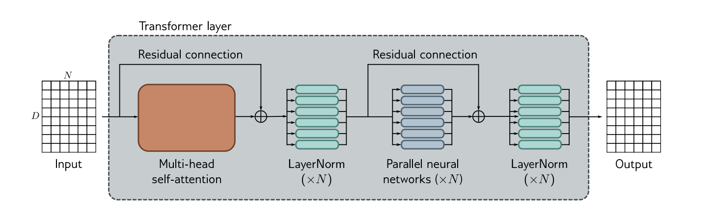
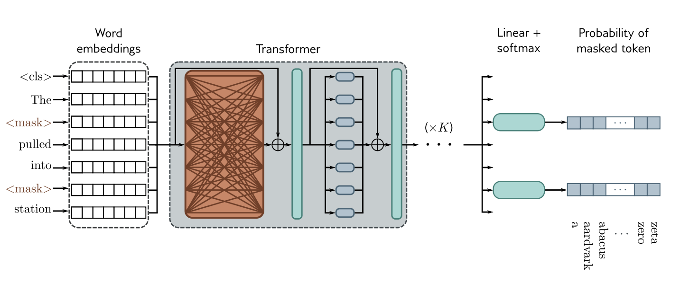
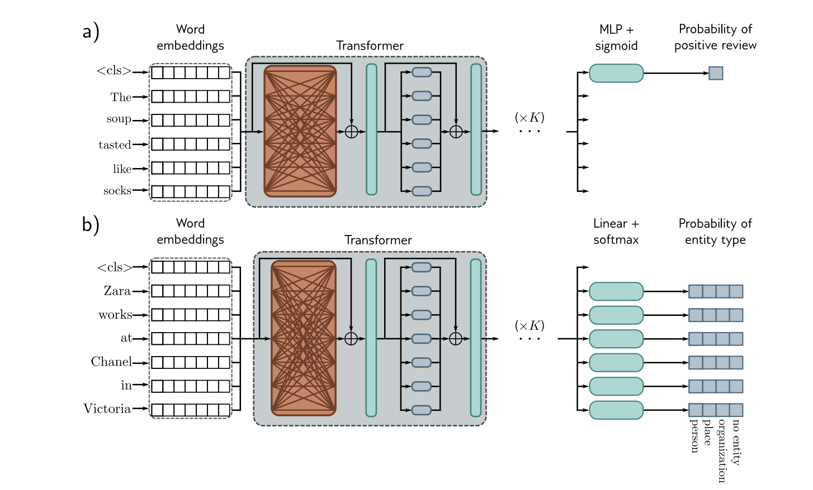
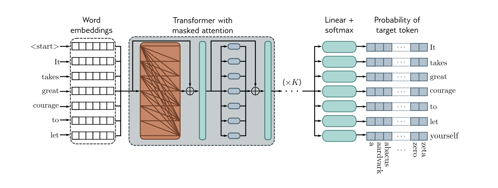
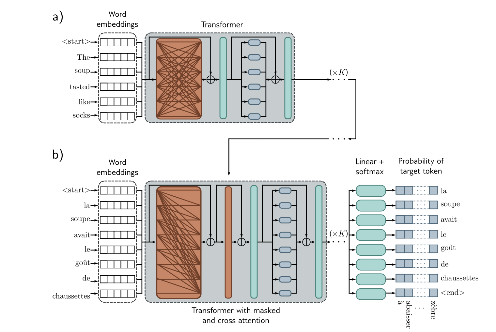
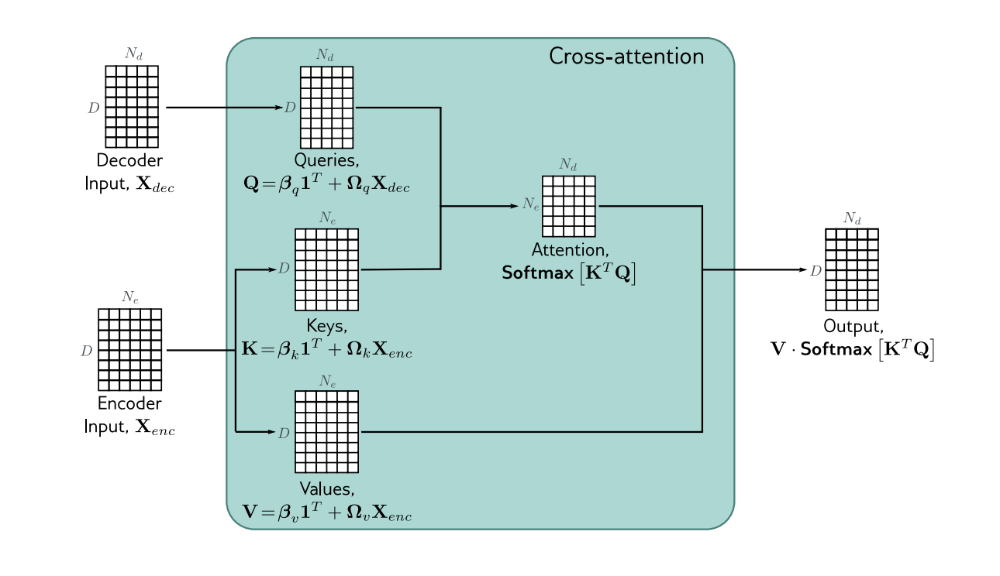

C12.Transformers
1.processing text data
给出如下段落, 想要对其做初步的处理用于进行下一步的处理:
The restaurant refused to serve me a ham sandwich because it only cooks vegetarian food. In the end, they just gave me two slices of bread. Their ambiance was just as good as the food and service.
即使这段话只有37个单词, 用one-hot编码将每个单词编码成长度为1024的向量, 这段话将达到37×1024大小的数据, 这样的数据十分巨大了, 和图像数据很像.
使用全连接层显然不合理: 首先数据太大了, 其次该数据是有结构的, 全连接层无法利用这种结构并且无法识别这种结构——文字的顺序不能颠倒, 而且在不同地方出现的相同文字可能是同一个意思(比如“dog”), 相同文字根据邻居可能有不同的意思(比如“it”指代的对象每次可能都会发生变化).
2.Dot-product self-attention
对于一个数据有$N$个输入, 每个输入都是一个大小为$D$的向量$\{\bold x_1, ...,\bold x_N \}$, 我们仍输出$N$个大小为$D$的向量. 进行如下步骤:
1.首先对每个输入向量做相同的线性变换, 得到$N$个向量$\bold v$:
2.然后对$N$个向量$\bold v$进行$N$次加权求和, 得到$N$个输出向量$\bold{sa}$:
其中, $a[]$被称为attention weight, 是一个有$N \times N$个值的矩阵
e.g. $N=3, D=4$

2.1.第一步计算
一共只用到了$D\times D+D$个值, 十分简单.
2.2.第二步计算
对于attention weight $a[]$, 一共只需要$N \times N$个值, 与输入数据向量大小$D$无关.
统一放到一个矩阵里会变成如下模样:

计算a[] 先计算两个仿射变换:
上述的$\{\bold q_n \}$ 被称为*queries*, $\{\bold k_m \}$ 被称为*keys*
再经过点积和softmax就可以得到$a[]$了:
由上式可知, softmax是对矩阵以每一列为单位做的, 实际的意义是对于一个query $\bold q$, 把每一个key $\bold k_m$都拿来与$\bold q$做匹配(点积表示的两者之间的相似度), 并归一化匹配的程度. 这是*imformation retrieval* 领域的专业名词.
2.3.summary
注意到, 上述过程没有用到激活函数, 原因在于上述过程已经是非线性的, 这是在计算attention weight过程中使用点积和softmax带来的.
初始值$\phi = \{\boldsymbol \beta_v, \boldsymbol \Omega_v, \boldsymbol \beta_q, \boldsymbol \Omega_q, \boldsymbol \beta_k, \boldsymbol \Omega_k \}$ 均与输入数据量N无关, 所以该网络可以用于其他长度的文本, 只需要重新计算attention weight.
$$\textcolor{red}{\bold{Error}}$$ 没有能直接描述self-attention机制的意象
2.4.矩阵形式
使用矩阵的形式使得表达更加紧凑, 将整个输入数据放在一个$D\times N$的矩阵$\bold X$里, value, queries, keys可以通过下式计算:
其中, $\bold 1$是$N\times 1$的全部值都是1的向量.
最后一步:
其中, softmax对矩阵每一列为单位归一化
3.sa常用优化
3.1.positional encoding
到目前为止, 上述方法无法区分打乱顺序的句子和正常的句子(attantion weight 没有单词的顺序)
absolute position encodings 使用一个包含了位置信息的矩阵$\bold \Pi$, 直接加在输入矩阵$\bold X$上, 该矩阵可以通过学习或者预先定好的值得到, 可以加在网络的输入层或者网络的每一层, 有时候只加在query和key的计算的开头.
Relative potisional encodings(omitted) 书上讲的含糊, 总之是对attention weight操作的一番
3.2.scaled dot-product self-attantion
出于对点积值过大过小的考虑, 对点积进行缩放:
3.3.multiple heads
对同一个数据使用多组参数$\boldsymbol \phi_h$分别做处理, 即multiple heads, 最后进行线性组合.
最后再做一次线性组合, 通过矩阵$\bold \Omega_c$:

原文代码实现 对于batch size 为1的输入, 先将输入进行了3个线形变换得到QKV, 再将QKV各自均分为多份, 再分别sa:

注意, 这里的多头h=3可调整为其他数值, 但QKV是固定的3个.
4.Transformer layers
一个transformer layer 一般包含两个部分: self-attention和以单词为单位的全连接层$\mathbf{mlp}[\bold x_{\cdot}]$, 以及三个优化:multi-headed, normalization, residual:

操作过程可以用下面公式表示:
5.Transformers for natural language processing
要做到NLP, 在上面基础上还要进行2额外的个步骤: tokenization, embeddings. 这两个步骤分别做到了识别单词, 对单词做合适的编码(而不是简单的one-hot编码).
5.1.tokenization-BPE algorithm
*tokens*指*tokenizer*将文本分解成的组成单元
设计此类算法的难点:
1.一些单词不在字典里, e.g.names
2.如何处理标点符号
3.不同后缀的单词如何联系 e.g. eat, ate, use, used
BEP算法
# BEP algorithm
# 给定初始语句
corpus = ['good morning, you', 'long time no see', 'nise to meet you']
# 生成初始的如下1个list和2个dict
# 记录所有出现的字母
vocab = ['g', 'o', 'd', 'm', 'r', 'n', 'i', 'y', 'u', 'l', 't', 'e', 's', ',']
# 记录所有出现的{单词=>频率}
word_freq = {'good':1, 'morning':1, 'long':1, 'time':1, 'no':1, 'see':1, 'nise':1, 'to':1, 'meet':1, 'you':2}
# 将word_freq的每一项单词分解, {单词=>分解list}
splits = {'good':['g','o','o','d'], 'morning':['m','o','r','n','i','n','g'], 'long':['l','o','n','g'], ...}
# 循环开始
# 再引入一个新的dict, 每次根据splits生成, 生成后用于更新splits和vocab, 至此形成一个vocab不断增长的循环
# 新的dict遍历word_freq的每个单词, 将单词带入splits得到分解list, 在分解list内部将相邻的两个string组合成新的list_pair, 根据word_freq增长新的list_pair的频率
pair_freqs = {['g','o']:1, ['o','o']:1, ['o','d']:1, ...}
# 将得到频率最大的list_pair放入vocab, 并更新splits的每个字符串list
vocab = ['ng', 'g', 'o', 'd', 'm', 'r', 'n', 'i', 'y', 'u', 'l', 't', 'e', 's', ',']
splits = {'good':['g','o','o','d'], 'morning':['m','o','r','n','i','ng'], 'long':['l','o','ng'], ...}
# 回到循环开始
# 设置vocab阈值, 在vocab增长到一个数量后退出, splits中的每个list中的string数目会越来越少 Rmk 上述算法初始化时通过空格的方法分解初始语句, 并记录频率得到word_freq. 有些有些语言没有空格, 直接不用word_freq, 将整个语句放入循环似乎也可以 (做适当调整, 必然会慢一些)
5.2.embedding
对于字典$\cal V$的每个单词先用one-hot编码, 输入的$N$个token可以用矩阵$\bold T_{|\mathcal{V}| \times N}$表示, 其中每一列代表一个token, 每一列只有一个1其余均为0.
然后再经过一个映射$\bold \Omega_{e}\in \R^{D \times|\mathcal V|}$, 将one-hot编码转变为另一种更紧凑的编码, 其中$D$一般取1024, 这样终于得到输入(embedding matrix)$\bold X=\boldsymbol \Omega_e \bold T$.
映射$\bold \Omega _{e}$需要通过学习获得.
5.3.Transformer model(粗糙)
transformer model 指处理embedding metrix的多层transformer layers, 一般有encoder, decoder, encoder-decoder, 分别用于: 将text embedding转化成另一种表示, 可以用于进一步的各种任务; 预测下一个token, 用于续写输入; 将一段字符串表示为另一字符串, 用于如翻译任务.
5.3.1.BERT(encoder model example)
vocabulary有30,000大小, embedding 有 1024-dimension, 经过24个transformer layers. 每个transformer layer中, self-attention有16个head, 每个queries, keys和values只有64个维度, 即$\boldsymbol \Omega_{vh},\boldsymbol \Omega_{qh},\boldsymbol \Omega_{kh}$并不是之前认为的$1024\times1024$, 而是$64\times1024$, 估计是16个heads的结果直接组装到一起, 才能保证经过一个transformer layer维度不变; 全连接层有一个隐藏层, 维度是4096.
使用BERT需要经过两个阶段: 先自监督训练(pre-training), 再通过fine-tuning用于其他任务的训练(transfer learning).
5.3.1.1.pre-training
通过对输入文本随机放置缺失值, 再通过网络预测缺失值进行有监督训练:

上图中, 输入数据的<cls>代表文本开头, <mask>代表随机放置的缺失值, 对输出的原mask位置做softmax, 通过多分类错误进行监督训练.
5.3.1.2.fine-tuning
在pre-training 训练好的模型的末尾增加layer用于特定任务的训练.
Text classification 将原最后一层改装为“对原cls的位置输出进行多分类任务监督”, 达到将整段输入进行分类的目的
word classification 将原最后一层改造为“对所有位置输出进行多分类任务监督”, 达到将每个词进行分类的目的

text span prediction 寻找一段话中最可能作为问题的答案的部分(omitted).
5.3.2.GPT3(decoder model example)
5.3.2.1.language modeling
e.g. 对于生成这段话“I love you”的概率, 可以通过条件概率分解为:
一个自动回归的语言模型可以通过每次预测下一个token的概率$Pr(t_n|t_1...t_{n-1})$达到逐渐得出一整段话的概率.
5.3.2.2.masked self-attention for training
如何用transformer实现上述language model?
每次输入一整段话, 通过合适的mask让模型在每一个位置上根据上面所有位置的单词给出下一个位置单词的概率, 再进行多分类错误.
该mask不同于上一节pre-training的mask, 该mask是对sa层的布线做了调整, 使得$sa_i$只能通过$\{v_1, ..., v_i\}$的加权求和得到:

5.3.2.3.Generating text from a decoder
输入一段话, 让模型不停的输出下一个概率最大的token并加入到这段话中. 通过合适的优化可以让计算很快, sa部分的权值结果可以反复利用.
5.3.2.4.GPT3 and few-shot learning
GPT3模型介绍 在GPT3, 单个数据长2048个token, batch size达到了3.2 million, 96个transformer layer, sa中有96个head, values、query、key维度为128, 训练中使用了300billion token, 一共包含175 billion 参数.
few-shot learner LLM不需要进行fine-tuning, 甚至不需要进行训练, 只需要几个例子就可以适应不同的问题, 比如:
Poor English input: I eated the purple berries.
Good English output: I ate the purple berries.
Poor English input: Thank you for picking me as your designer. I’d appreciate it.
Good English output: Thank you for choosing me as your designer. I appreciate it.
Poor English input: The mentioned changes have done. or I did the alteration that you requested. or I changed things you wanted and did the modifications.
Good English output: The requested changes have been made. or I made the alteration that you requested. or I changed things you wanted and made the modifications.
Poor English input: I’d be more than happy to work with you in another project.
Good English output: I’d be more than happy to work with you on another project.
上述对话的最后一句是GPT3生成的.
5.3.3.machine translation(encoder-decoder example)
比如英语转法语:
1.首先将英语输入到encoder, 得到一个合适的representation
2.再将翻译好的法语输入到decoder(token 生成器), 此时的decoder还会结合encoder的结果进行生成
3.训练完毕后的使用方法呼之欲出 (大概是给定全部英文和一个start, 先encoder得到embedding, 将embedding放到decoder中, 再让decoder不断生成下一个单词)

decoder利用encoder结果的方法 在decoder的transformer layer中的sa后新增一层cross-attention, cross-attention将decoder加权组合为query, 将encoder的结果加权组合为key和value, 进行attention计算和组合, 如下图:

6.Transformer for long sequence(omitted)
7.Transformer for image(omitted)
8.总结
问题 对于transformer理解十分有限, 下面提出几点问题:
1.self-attention 没有改变数据的维度, 将文字的embedding直接做线性运算, 同时自带非线性(无需激活函数).总的来看, 意义不明. 相比之下, CNN的滤波器乃至全连接层都有很好的意义.
2.记忆机制不明
3.decoder的概率预测的方法和中文屋如出一辙, 难以想象该模型拟合到了一个合适的现实世界模型
§Problems
Problem12.3
Show that the self-attention mechanism (equation 12.8):
is equivariant to a permutation $\bold{XP}$ of the data $\bold X$, where $\bold P$ is a permutation matrix. In other words, show that:
proof
上述过程的最后一步用到了:
这是由于置换的逆仍然是置换, 并且, 对于一个全是1的行向量做列变换置换得到的仍是全是1的行向量.
同理$K[X], Q[X]$, 则:
置换矩阵对每一列进行的softmax是没有影响的, 即:
另一方面, 经过我的想象, 下面等式应该是成立的$\textcolor{red}{\bold{Error}}$:
想象你是矩阵, 列向量矩阵$V[X]$经过一个列向量置换, Softmax矩阵作为权值经过相同的行置换, 加权求和得到的东西和置换前得到的是一样的.
所以继续上面的推导, 立得:
$\blacksquare$
$\textcolor{red}{\bold{Answer}}$ 上面有一个地方发生了一点小错误, 导致问题变得复杂了:
转置之后置换矩阵应该放在左边, 之后答案呼之欲出.
所以一共只用到了如下两个公式就可以得出答案:
Problem12.10
Attention weights are usually computed as:
Consider replacing $\exp[k^T_mq_n]$ with the dot product $g[k_m]^T g[q_n]$ where $g[•]$ is a nonlinear transformation. Show how this makes the computation of the attention weights more efficient.
solution 显然, 使用其他的非线性函数同样可以达到归一化的效果, 而$\exp$的计算开销比较大, 选择任意一个开销较小的非线性函数即可.
$\textcolor{red}{\bold{Answer}}$ 你理解错题目意思了, 题目想要的是如下公式: